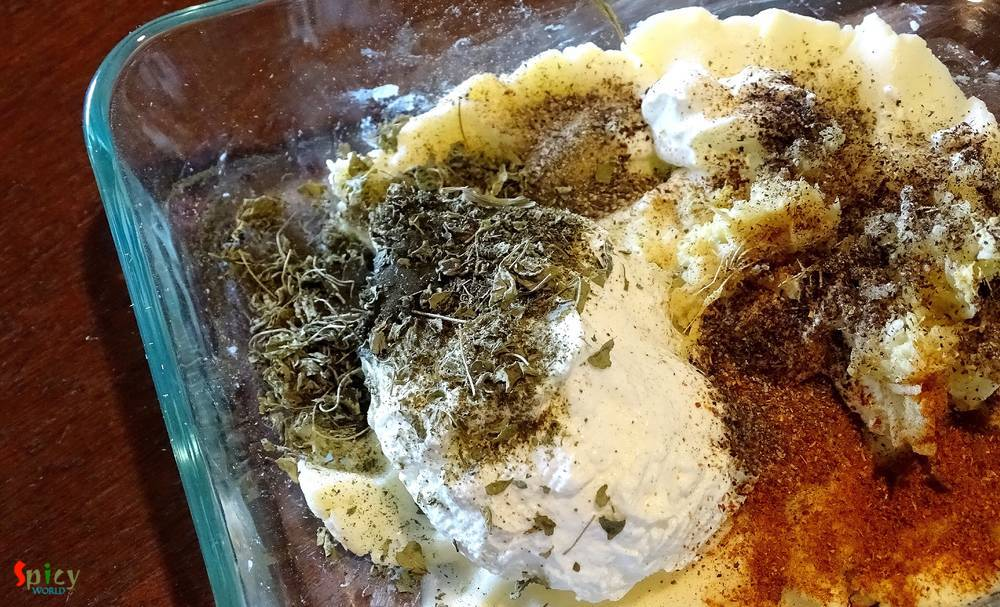
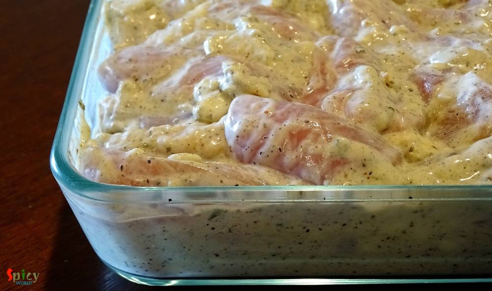
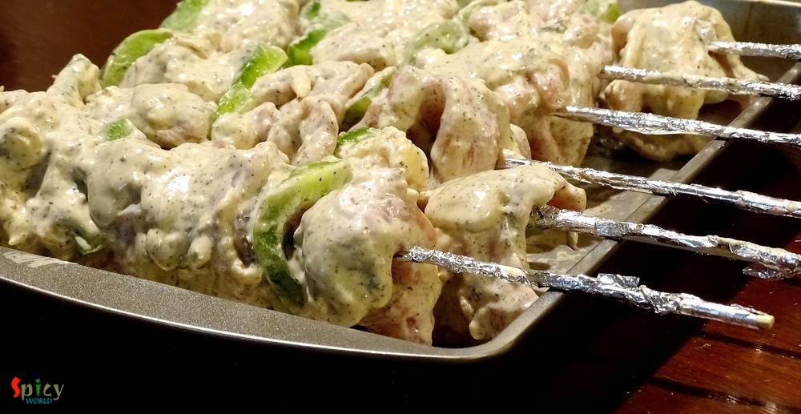

Simple and Easy Recipes
Chicken Malai Kabab / Makhmali Murgh Kabab
© 2016 Spicy World, Published on: Apr 15, 2016
What can I say about this one? Because again its Kabab!! This malai kabab has very smooth texture and smokey flavour. 'Malai' means cream, usually chicken cubes are marinated with yogurt, cheese, cream and some spices, I also did the same. You will be lost whenever you put that juicy, tendor piece of chicken in your mouth. I am damn sure that these kababs will make your appetite satisfy. Enjoy them with coke / beer or you can also make different types of wrap with them. You can never go wrong with these simple yet tasty kababs.

Ingredients
- 20 pieces of boneless chicken cubes.
- 1/4 th cup of mozzarella cheese.
- Half cup of hung curd.
- 1 Tablespoon of fresh ginger and garlic paste.
- 2 - 3 Tablespoons of heavy cream.
- 2 Tablespoons of crushed kasoori methi / dry fenugreek leaves.
- 2 Teaspoons of garam masala powder.
- 2 Tablespoons of black pepper powder.
- 2 Teaspoons of cornflour.
- Salt.
- 2 Teaspoons of oil.
- 2 Tablespoons of butter.
- Some onion and capsicum cubes.


Steps
Mash the cheese with your hand for 4 - 5 minutes and make it smooth.
Now add hung curd, kasoori methi, salt, garam masala, black pepper powder and ginger & garlic paste.
Add the cream and cornflour. Mix everything with your hand very well.
Add the chicken cubes and oil to the curd mixture. Mix well. If you want more heat, you can add some green chilli paste to the marination.
Keep the chicken marinated overnight or atleast 4 - 5 hours.
If you want to use bamboo skewers, then soak them in water for 15 minutes before grilling.
Secure those marinated chicken cubes with some onion and capsicum cubes in skewers.
Grill them in preheated oven for 20 minutes on 470F, one side. After that change the sides and again grill them for 15 minutes.
Don't forget to brush some butter each side after grilling.
Your chicken malai kabab is ready.
Serve them hot with onion rings and green chutney.
")